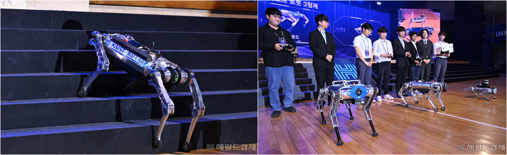

News
Highlights
2024 Sangju Marathon
RAIBO2 became the first ever quadruped robot to complete a full marathon!

On November 17, 2024, RAIBO2 successfully completed a full marathon (42.195 km) during the Sangju Gotgam Marathon. Powered by a 16s10p Li-ion battery, the robot completed the course in 4 hours, 19 minutes, and 52 seconds on a single charge, handling slopes of up to 10 degrees. The operation team, consisting of a controller, camera operator, and crowd support, collaboratively managed the robot, with each member covering 10 km segments.
2023 Innovate Korea
{kind=link}
The 2023 Innovate Korea event was held under the theme of “Our Future” with a number of famous Congressmen, KAIST presidents, and Ncsoft president. Raibo participated in the event as three KAIST robot brothers. Raibo quickly climbed up and down a 20cm-high stairs and perform 2m/s high-speed walk successfully at demonstration.
Spotlights
Our work was spotlighted on the nature news article

Our work was highlighted on numerous broadcast media
Webinars
Development and Related Research of RaiBo at KAIST (2023.06.22)
Locomotion Controller Training with Reinforcement Learning & RaiSim (2021.01.19)